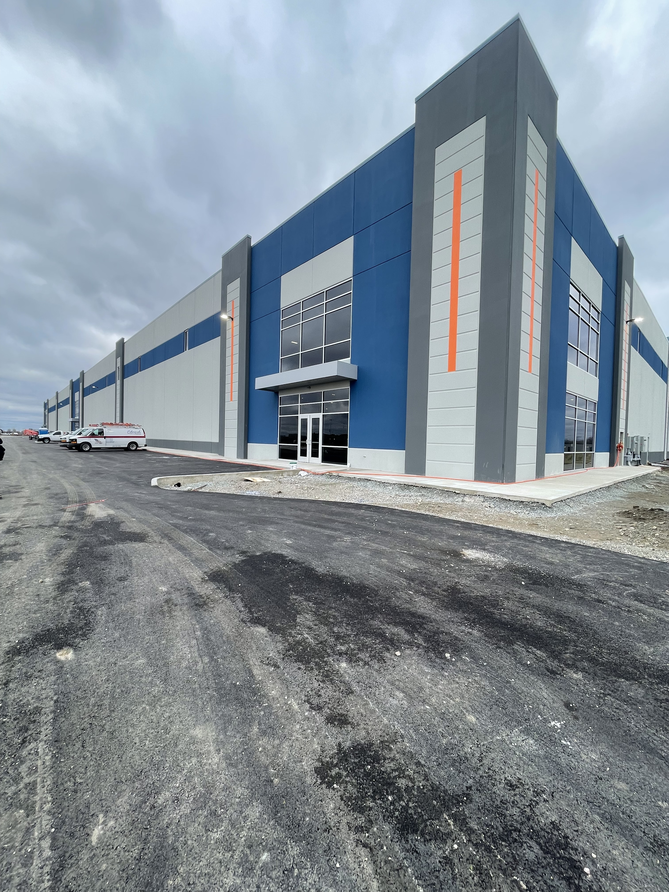
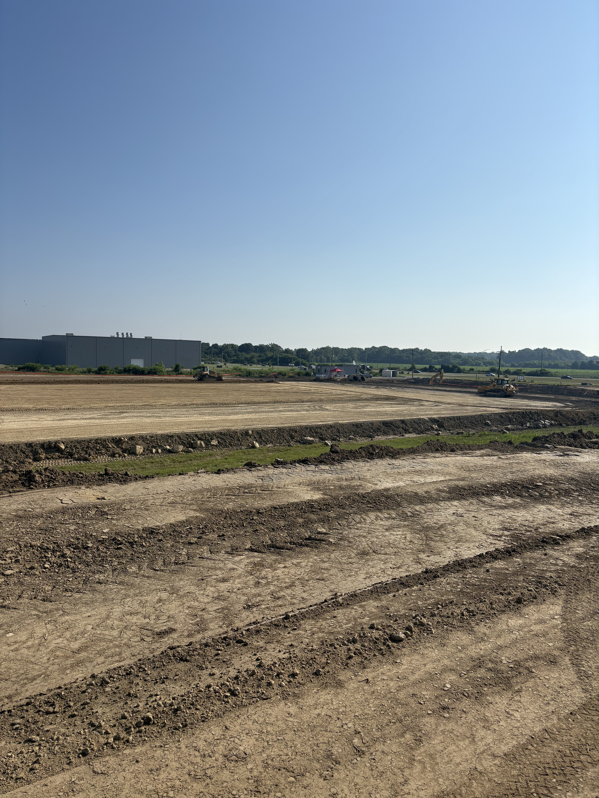

Civil Engineering Portfolio
Building the world, one project at a time.
Junior Civil Engineering student at Rose-Hulman Institute of Technology with hands-on internship experience from the field to the design table — and a genuine passion for how things get built.

Who I Am
Hey — I'm Brock. I grew up in Eaton, Ohio, always wondering how the buildings, bridges, and overpasses around me actually came together. That curiosity turned into a degree path, and now I'm a junior at Rose-Hulman chasing a BS in Civil Engineering.
I lean toward the construction side of the industry, but I've genuinely enjoyed exploring every corner of the field — from sitting in on field operations during a sewage system build to managing submittals and scheduling for multi-million-dollar industrial projects at ARCO.
When I'm not crunching loads or reading structural drawings, you'll probably find me on the football field or spending time with my fraternity brothers at Phi Gamma Delta.
What I Bring
Whether it's AutoCAD, project scheduling, or just knowing how to read a set of drawings on-site, here's what I work with day-to-day.
Where I've Worked
Three internships, two companies, and a whole lot of real-world lessons that no classroom could fully teach.
What I've Built
A mix of professional and academic work — each one taught me something different about what it takes to take a project from an idea to a real structure.
This one went the full distance. I was part of the team that estimated the building cost and put together the bid — and we won it. Once the project kicked off, I worked under the project manager to organize and review all submittals, coordinate the early-stage workflows, and help get the project moving from paper to site. Getting to see a bid turn into an actual construction project was a pretty rewarding experience.

Working on earthwork takeoffs and stormwater management systems for industrial projects gave me a strong appreciation for what happens before the steel ever goes up. Getting the site right — grades, drainage, compaction — is what everything else depends on.
Our team delivered a preliminary design for a gymnasium addition to a local church — making sure it connected naturally with the existing structure both functionally and aesthetically. I learned a lot about client communication on this one: what questions to ask, what information actually matters to the owner, and how to present technical decisions in a way that makes sense to non-engineers.
Where I Study
Relevant Coursework